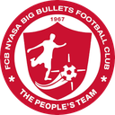

SEASON 26/27
NYAMBADWE UNITED
SRFA FINCA Division League 1 · 3rd · 15 pts
P7 · 4W 3D 0L · GD +8
WDWWD
Upcoming Fixtures
No upcoming fixtures.
Recent Results
| HOME | RESULT | AWAY |
|---|---|---|
| Nyambadwe United | 1:1 | Wanderers Reserve |
Eric Sadia Chastry Kandiado | ||
Ntopwa FC | 0:2 | Nyambadwe United |
Randwell Nyirenda 28'Eric Sadia 62' | ||
| Nyasa Big Bullets Reserve  | 0:1 | Nyambadwe United |
Innocent Jauma | ||
FC Thondwe | 2:2 | Nyambadwe United |
Stuart KalimaSamuel Austin Benito ChikumbuKelvin Chimodzi | ||
| Nchima United | 0:1 | Nyambadwe United |
Innocent Jauma | ||
| Chiradzulu United | 0:4 | Nyambadwe United |
Francis ChirwaLandwell NyirendaInnocent JaumaPeter Mbowe | ||
QPL All Stars | 0:0 | Nyambadwe United |